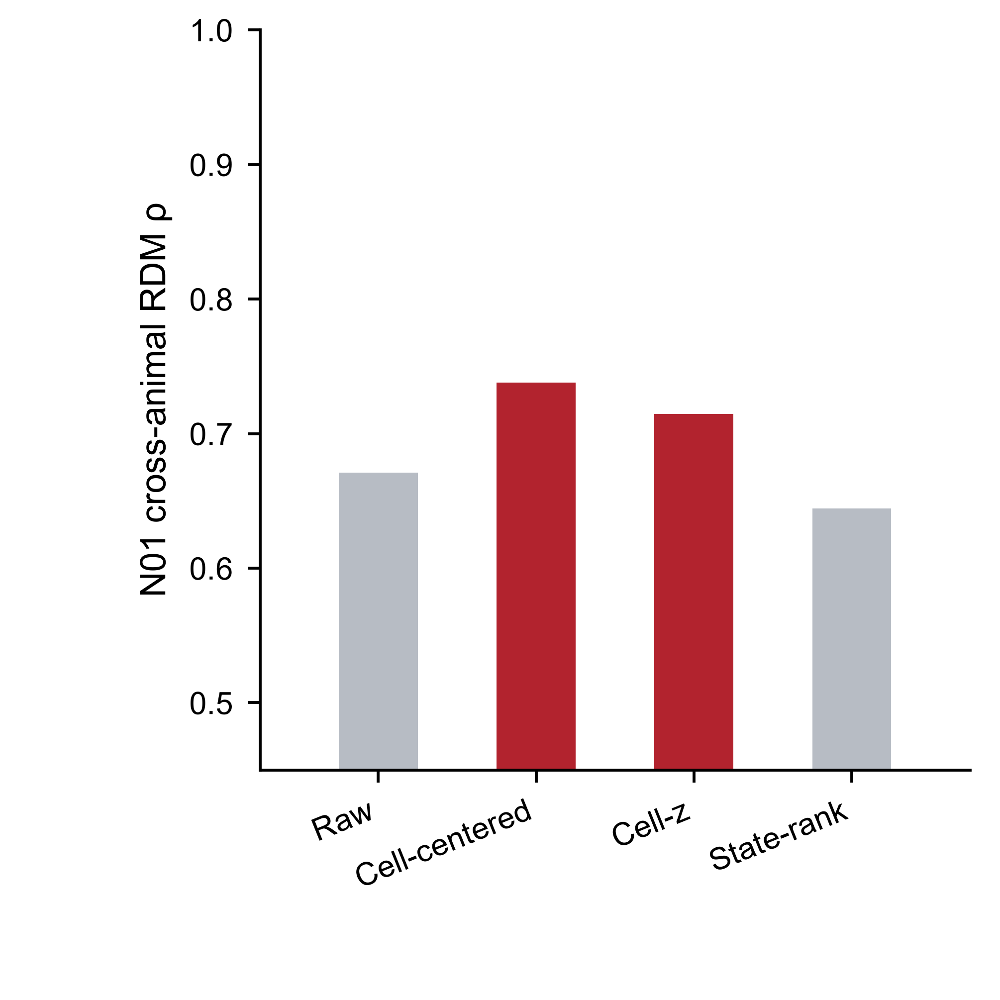
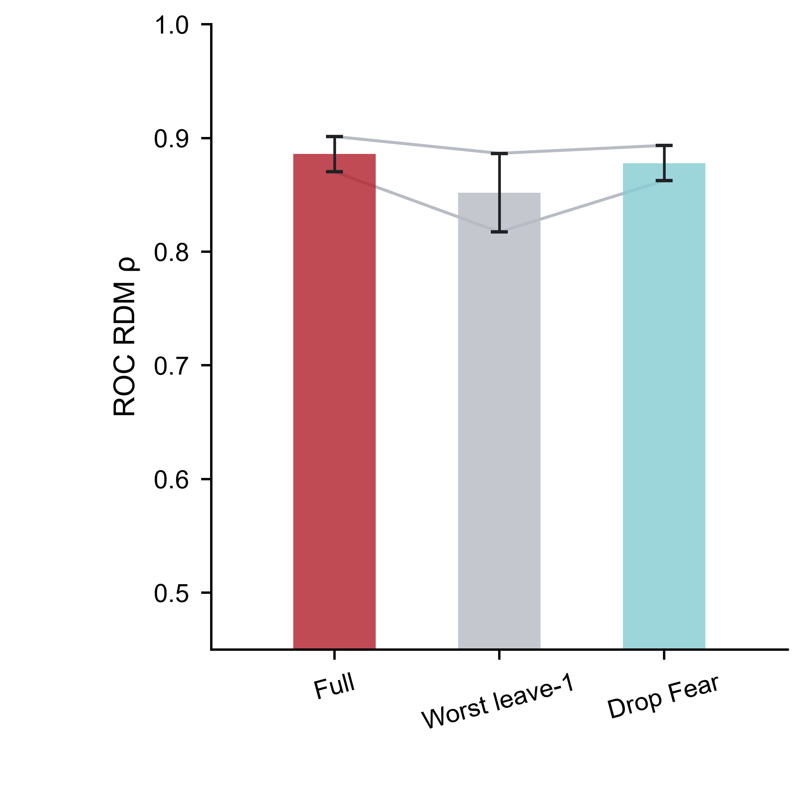
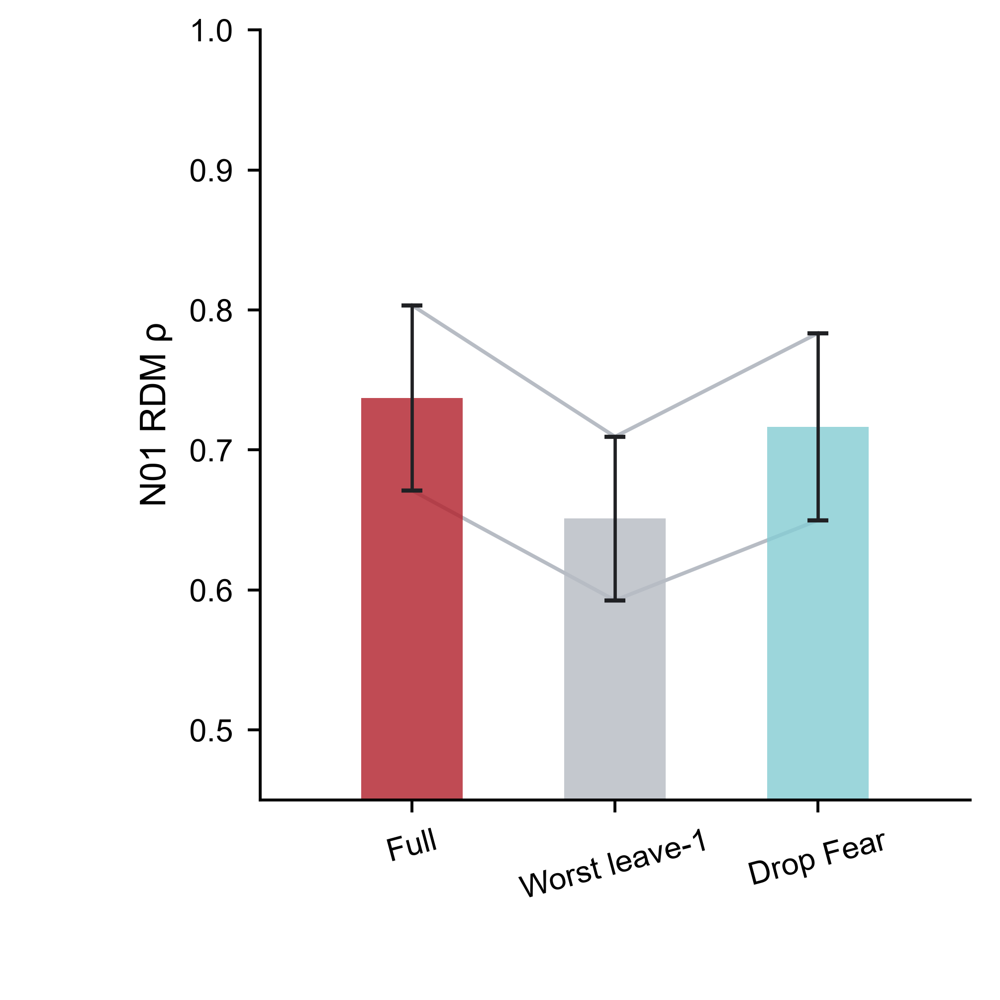

Legacy 2017 · 2 real animals
State geometry survives removal of generic responsiveness and single-state leverage.
ANM378231 and ANM372321 are the two biological animals. The two ANM372321 source lineages are robustness units, not extra animals.

ROC residualization
Cross-animal geometry remains high after cell-centering and cell-z normalization. PDF · SVG


N01 residualization
The independent N01 representation shows the same qualitative robustness. PDF · SVG


ROC leave-one-state
Two cross-animal comparisons remain high after the worst state is removed or Fear is dropped. PDF · SVG


N01 leave-one-state
No single behavioral state explains the N01 cross-animal geometry. PDF · SVG


Cell-centered result. ROC cross-animal ρ=0.824/0.851; N01 ρ=0.747/0.738.